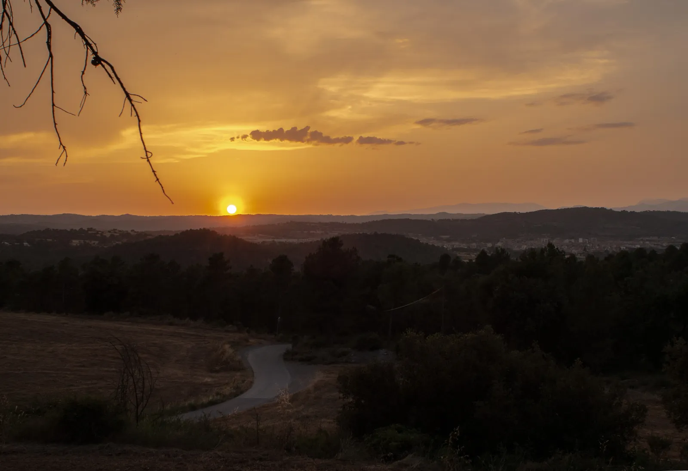

Historia y patrimonio
Tres siglos de vida en les Collades
Una masia catalana del siglo XVII en el corazón del Bages, donde la historia, el vino y la tradición se unen.
Balsareny · Bages
El patrimonio de les Collades
La historia del patrimonio de les Collades gira en torno a la evolución de una masía tradicional que se expandió de la mano de alianzas matrimoniales y el crecimiento agrario catalán del siglo XVIII.
Situada en Balsareny, comarca del Bages, la masia conserva hoy sus portales de piedra del siglo XVII, el patio interior con arcadas y el celler de muros gruesos, testigos de una vida rural que continúa.

Cronología
De 1683 al turismo rural
Origen del Mas Collades
El 24 de marzo de 1683 se concede a Isidre Pons, casado con Arcàngela Collades, el precario sobre el mas Collades. Balthazar Collades, pagès, aparece en los registros parroquiales desde 1679: de su estirpe viene el nombre de la masia, del topónimo coll (paso entre montañas).
Josep Pons i Collades y el auge del viñedo
Josep Pons i Collades figura como propietario legítimo. Se documenta la Caseta Nova de les Collades (hoy les Collades de Baix). Las tierras de secano se destinan a la vid: Picapoll, sumoll y pansera. La masia tiene lagares de piedra (tines) y bodega en la planta baja.
La filoxera y el abandono
La plaga de la filoxera destruye los viñedos de Balsareny a finales de siglo. Sin infraestructura para replantar, las bodegas dejan de producir vino y los espacios se destinan a grano y aceite. La finca deja de ser un centro agrario autosuficiente.
Residencia y restauración
Mediados de siglo: la familia Coll-Solà (Josep Maria Coll i Bacardit, constructor de Manresa, y Montserrat Solà i Font) adquiere y restaura la masia con respeto a la piedra, dejando a la vista sillares, vigas y el celler. Se conservan utensilios de labranza como elementos etnológicos.
Turismo rural y recuperación
Marta Conti con sus hijos emprende un proyecto para ir recuperando la masia entera, sin prisa, y mantener viva la memoria de cómo se vivía antes. Mas Collades se abre a huéspedes que quieren parar, respirar y compartir esa vida de antes.
Toponimia
Les Collades de Dalt i de Baix

Les Collades de Dalt
El antiguo mas original, el edificio del siglo XVII donde habitó la estirpe Pons, recibe este nombre por su posición geográfica más elevada en la montaña (cota 400).

Les Collades de Baix
La Caseta Nova de 1775, situada a unos 500 m al noroeste y en nivel inferior (cota 375), dio origen a esta división popular del complejo.
La señal de hospitalidad de la masia
Cuando llegas a la casa te reciben tres cipreses en la entrada. En la tradición catalana —de raíz romana— los cipreses de la masia eran un código de hospitalidad visible desde lejos: un ciprés anunciaba bebida; dos, bebida y comida; tres, bebida, comida y alojamiento para el viajero.
Esos tres cipreses representaban lo que la masia ofrecía: acogida completa. Hoy siguen en pie como recordatorio de esa promesa de siempre.
El vino en la masia
Del lagar de piedra al celler histórico
Tines empotradas
Lagares de piedra revestidos con baldosas cerámicas (bairis), empotrados en los gruesos muros para mantener el frescor y ahorrar espacio.
Bodega doméstica
La planta baja, fresca y sombría, abastecía a la familia y a los jornaleros, con excedentes solo en mercados semanales locales.
Variedades autóctonas
Picapoll, sumoll y pansera: cepas del Bages previas a la filoxera que sobreviven hoy en la comarca.

El proyecto
Recuperar la masia, recuperar la vida de antes
Mas Collades es un proyecto para ir recuperando la masia entera, pieza a pieza y sin prisa. Cada estancia, cada muro y cada utensilio cuenta cómo se vivía aquí antes; queremos que esa historia no se pierda.
Restauramos respetando lo original y compartimos la finca con quienes nos visitan: el huerto, las gallinas, la leña y el silencio del campo, para que también tú vivas el ritmo de antes.
"Som lo que pensem, som lo que sentim, som lo que vivim."
Sostenibilidad
Agua, sol y recuperación
Agua y energía
El proyecto de Mas Collades es volver a la sostenibilidad: extraemos agua del pozo actual y de una mina de pared, y avanzamos hacia la energía solar con placas.
Espacios que vuelven
Cada día trabajamos un poco más para recuperar espacios que alguna vez existieron y restaurar los establos en diferentes salas. Quienes vuelven pueden seguir el proyecto en marcha.
Viñas por venir
En el futuro nos gustaría plantar cepas y hacer algunas viñas, para ir recuperando lo que una vez fue.
Alrededores
Rutas senderismo desde Mas Collades
Ruta dels Forns de Calç
Antiguos fornos de cal repartidos por la zona, con aprendizaje sobre la producción tradicional de cal y vistas panorámicas.
Ruta de les Fonts
Font de la Roca, Font del Forat y otras fuentes naturales para descansar y observar flora y fauna local.
Serra de Castelltallat
Ruta más exigente por bosques y prados con vistas espectaculares y biodiversidad de la región.
Castell de Balsareny
Campos rurales, pinares y alamedas hasta el castillo medieval, con vistas del Llobregat y del pueblo.